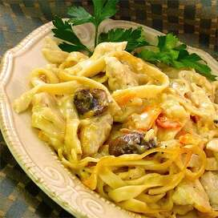

Tetrazzini

¡Delicioso y cremoso! Esta receta es la favorita de mi hermano
de todo lo que cocino.
Igredientes
- Spray para cocinar
- ½ libra de pasta fettuccine
- 2 mitades de pechuga de pollo deshuesadas y sin piel, cortadas en tiras
- 1 ½ cucharadas de margarina
- ½ taza de champiñones rebanados (Opcional)
- ½ cebolla pequeña, finamente picada
- 2 dientes de ajo, picados
- ½ pimiento rojo, en cubos
- 2 cucharadas de harina para todo uso
- 1 taza de caldo de pollo
- ¾ taza de crema batida espesa
- ¾ taza de leche
- 10 cucharadas de queso Cheddar rallado, dividido
Pasos
- Precaliente el horno a 350 grados F (175 grados C). Rocíe una cacerola con aceite en aerosol.
- Llena una olla grande con agua ligeramente salada y lleva a ebullición. Agregue los fettuccine, vuelva a hervir y cocine la pasta a fuego medio hasta que esté bien cocida pero aún firme al morder, aproximadamente 8 minutos. Desagüe.
- Caliente el aceite de oliva en una sartén a fuego medio; cocine y revuelva las tiras de pollo en el aceite caliente hasta que ya no estén rosadas, aproximadamente 10 minutos. Retire el pollo a un tazón, dejando los jugos de la sartén en la sartén. Derrita la margarina en la sartén caliente; cocine y revuelva los champiñones, la cebolla y el ajo en una sartén hasta que los champiñones se hayan ablandado y perdido su líquido, aproximadamente 5 minutos. Agregue el pimiento rojo a la mezcla y espolvoree con harina. Revuelva para cubrir y cocine, revolviendo constantemente, durante 1 minuto.
- Mezcle lentamente el caldo de pollo con las verduras, revolviendo para formar una salsa espesa; mezcle la crema y la leche en la salsa. Cocine a fuego lento hasta que espese, alrededor de 1 minuto. Mezcle 1/2 taza de queso suizo, 1/2 taza de queso cheddar, 1/4 taza de queso parmesano, tomillo, sal y pimienta negra en la salsa y cocine a fuego lento hasta que el queso se derrita y se combine con la salsa.
- Extienda la mitad de la pasta fettuccine cocida en el fondo de la cacerola preparada, cubra con la mitad del pollo y la mitad de la salsa de crema. Repita las capas una vez más y espolvoree las 2 cucharadas restantes de queso suizo, 2 cucharadas de queso cheddar y 2 cucharadas de queso parmesano por encima.
- Hornee en el horno precalentado hasta que la cubierta de queso esté bien dorada, de 25 a 30 minutos.